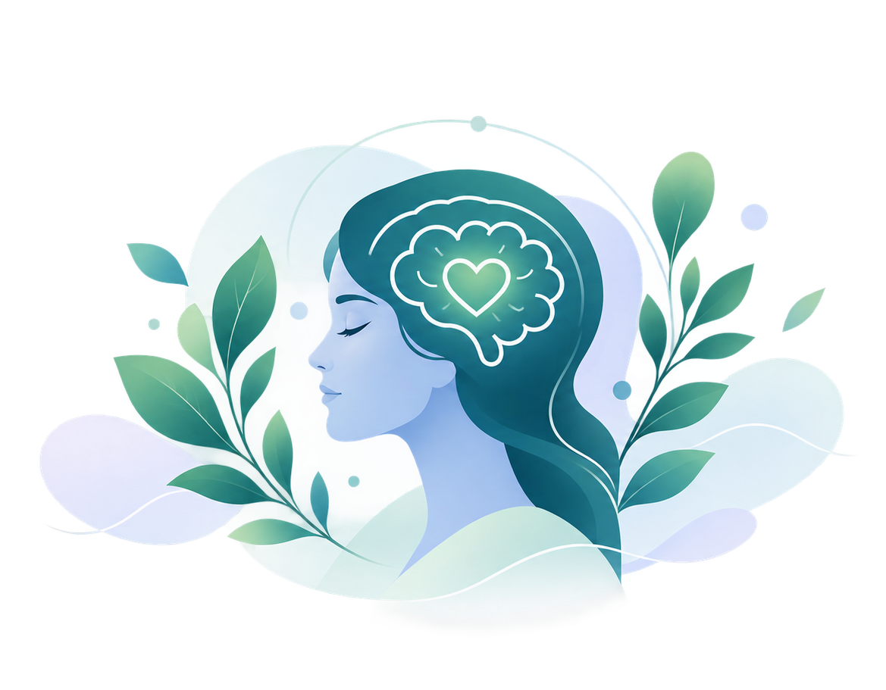

A clearer picture of
how you're feeling.
PPD-Adapt is a research prototype about postpartum depression (PPD), which can affect mothers after childbirth. It asks a few thoughtful questions about your mood, anxiety, stress, sleep, and bonding with your baby, and adapts to your answers as you go. It's quick, private, and designed to support your well-being. It is not a diagnosis.

Before we begin
This build is an adaptive questionnaire covering Depression, Anxiety, Stress, Fatigue, and Sleep. It asks focused questions one at a time based on your previous answers. Your answers stay on this device the whole session. Nothing is sent anywhere.
Depression
Low mood, loss of interest
Anxiety
Worry, tension, restlessness
Stress
Pressure, overwhelm
Fatigue
Low energy, exhaustion
Sleep
Quality, duration
About this build
PPD-Adapt is an adaptive screening prototype. Instead of a fixed, one-size-fits-all questionnaire, it uses an item-response-theory engine to pick the single most informative next question based on everything you've answered so far, which is why most sessions end well before every item has been asked.
Adaptive by design
Each answer updates a running estimate across five domains, and the engine stops early once it has enough information, or reaches the session limit.
Runs on your device
The engine, item bank, and scoring all run client-side in this page. Nothing is uploaded, logged, or shared with a server.
Honest about its limits
This is a screening prototype, not a diagnosis. A verified Urdu translation is not wired into this build yet, so English is shown by default.
Resources
If a session flags a safety concern, this app shows an in-context message before anything else. Beyond that moment, here's general guidance. This build doesn't yet look up region-specific hotline numbers automatically.
In immediate danger
Contact your local emergency services right away, or go to your nearest emergency department.
Talk to someone you trust
A partner, family member, friend, or your doctor or midwife can be a first, low-pressure step.
Bring your results to a visit
The session summary is meant as a conversation-starter with a clinician, not a stand-alone verdict.
Contact
Questions about this build, the engine, or the underlying item bank. Send a note below.
Faisalabad, Pakistan
Prototype maintained as part of an ongoing research build.
Response time
This is a demo form for now. See the note beside it about the missing backend.